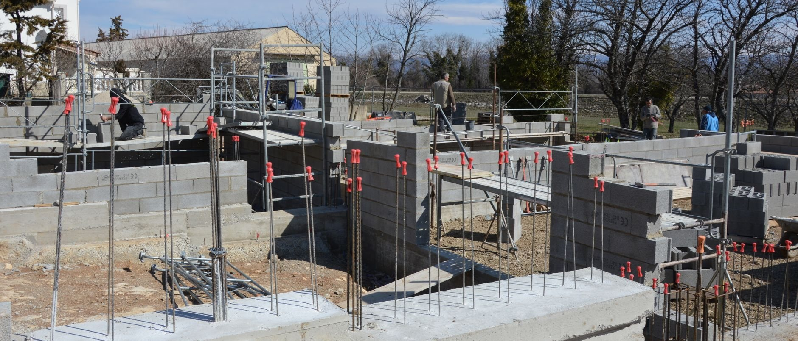
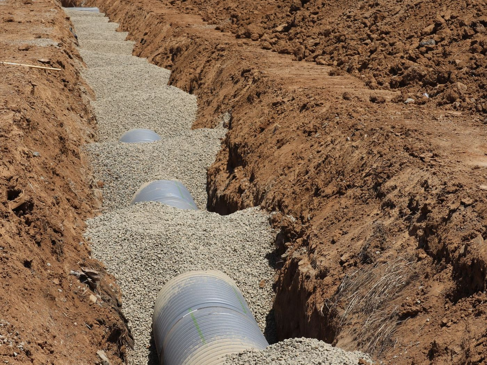

Białe wykwity i łuszcząca się farba
Sól wyniesiona przez wodę krystalizuje przy powierzchni muru i rozsadza tynk od środka. Skuwanie i nowa gładź bez izolacji wraca do tego samego stanu po sezonie.

Ta sama zasada co na dachu, tylko po drugiej stronie budynku. Ściana fundamentowa stoi w gruncie, który po każdym deszczu pracuje jak gąbka.
Po ulewie grunt wokół budynku nasiąka i przez kilka dni oddaje wodę w stronę muru. Jeżeli nie ma jej gdzie odpłynąć, opiera się o ścianę fundamentową i szuka drogi do środka - przez pory betonu, spoiny i styk ściany z ławą.
Dlatego izolacja pionowa i drenaż opaskowy pracują w parze: jedna warstwa nie wpuszcza wody do muru, druga zabiera ją, zanim zdąży się o niego oprzeć.

Zawilgocona ściana fundamentowa rzadko daje o sobie znać kałużą. Najpierw zmienia się tynk, zapach i rachunek za ogrzewanie.
Sól wyniesiona przez wodę krystalizuje przy powierzchni muru i rozsadza tynk od środka. Skuwanie i nowa gładź bez izolacji wraca do tego samego stanu po sezonie.
Wilgoć podciągana kapilarnie zatrzymuje się na wysokości kilkudziesięciu centymetrów. Granica jest zwykle wyraźna i nie schnie nawet latem.
Wilgotny mur podnosi wilgotność powietrza w całym pomieszczeniu. Pleśń pojawia się najpierw tam, gdzie powietrze krąży najsłabiej.
Miejsce, w którym izolacja pionowa kończy się za nisko. Woda z odbicia od opaski wchodzi nad warstwę i idzie w mur.
Układ warstw dobieramy do tego, czy budynek dopiero powstaje, czy trzeba odkopać istniejącą ścianę, oraz do poziomu wody w gruncie.
Grubowarstwowa masa bitumiczna KMB albo membrana układana na oczyszczonym i zagruntowanym murze. Narożniki, styk ze ławą i przejścia rur dostają wyoblenie i wzmocnienie siatką.
Folia kubełkowa albo płyty XPS chronią świeżą izolację przed uszkodzeniem podczas zasypywania wykopu, a przy ścianie ogrzewanej piwnicy odcinają dodatkowo mostek termiczny.
Rura w obsypce żwirowej i geowłókninie, ułożona ze spadkiem wokół budynku, odbiera wodę, zanim ta oprze się o ścianę. Studzienki rewizyjne w narożnikach zostawiamy dostępne do przepłukania.
Izolację wyprowadzamy ponad poziom terenu, żeby woda odbijająca się od opaski nie wchodziła nad warstwę. Na cokole idzie tynk mozaikowy albo inne wykończenie odporne na zachlapanie.
Przy nowym budynku wszystko jest po naszej stronie: mur jest czysty, wykop otwarty, a dostęp do styku ściany z ławą swobodny. Izolację pionową łączymy wtedy z izolacją poziomą pod ścianą, tak aby obie warstwy tworzyły jedną ciągłą barierę.
To najtańszy moment na tę robotę w całym życiu budynku. Każda naprawa później oznacza już odkopanie ściany, a czasem także rozbiórkę opaski, schodów albo podjazdu.
Przy zawilgoconej piwnicy prace prowadzimy odcinkami, żeby nie odsłaniać całego obrysu naraz.
Sprawdzamy poziom zawilgocenia, rodzaj muru i to, czy istniejąca izolacja w ogóle była wykonana. Odkrywka pokazuje stan ściany poniżej terenu.
Odcinkami odsłaniamy ścianę do poziomu ławy, czyścimy mur ze starej powłoki i zostawiamy go do przeschnięcia.
Gruntowanie, wyoblenia, warstwa wodoszczelna na całej wysokości ściany, uszczelnienie przejść instalacyjnych i ochrona mechaniczna.
Jeśli grunt tego wymaga, układamy drenaż ze spadkiem, zasypujemy wykop i odtwarzamy opaskę wokół budynku.
Mur schnie miesiącami. Ściana, która nasiąkała latami, oddaje wodę powoli i robi to jeszcze długo po odcięciu jej źródła, dlatego mówimy o tym przed rozpoczęciem prac, zamiast obiecywać suchy tynk w tydzień. Najpierw odcinamy drogę wody, potem mur schnie, a wykończenie wnętrza zostawiamy na koniec.
Zadzwoń i opisz, co widać na ścianie. Po oględzinach powiemy, czy wystarczy izolacja pionowa, czy potrzebny jest również drenaż.